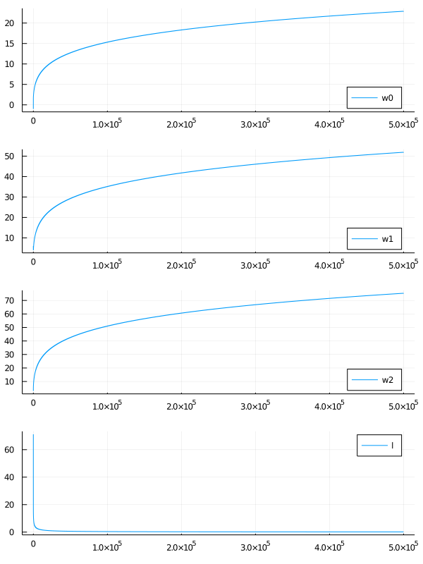
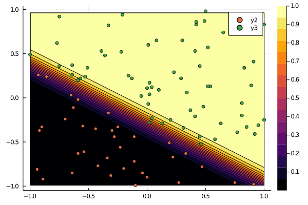
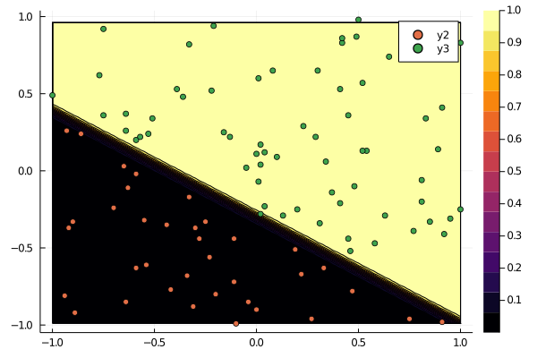
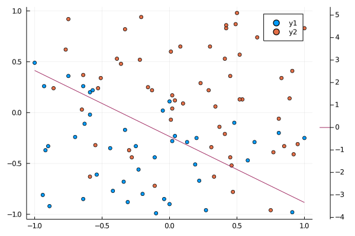
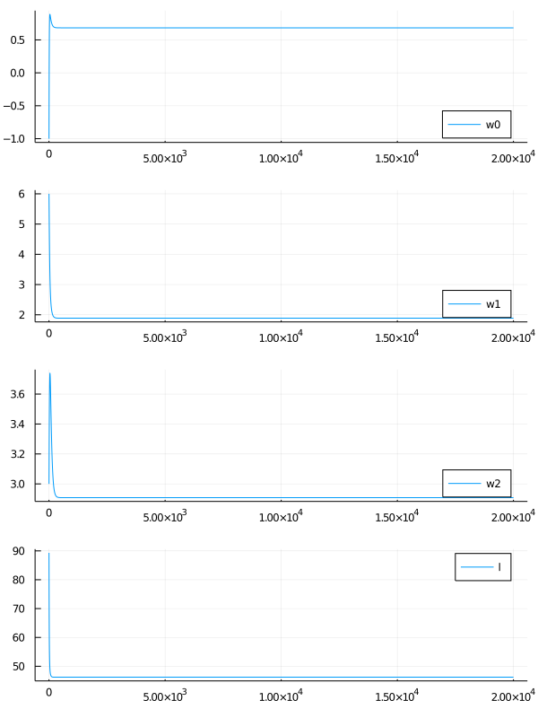

式変形の一部はProbabilistic Machine Learning: An Introductionを参考にしている。
問題設定
データが $N$ 個あり、入力は $\bm{x}_n = (x_{n1}, x_{n2}, \ldots, x_{nD})$、出力は $y_n \in \{ 0, 1 \}$ とする。
このとき、入力 $\bm{x}$ が与えられたとき出力 $y$ を予測したい。
確率モデルの定義
ここでは確率的なモデルを考える。すなわち、 データ $\bm{x}$ が与えられたとき、 $y = 0, 1$ のどちらの確率が高いのかを考える。
$y$ は2値だから、ベルヌーイ分布としてモデル化できる。
$$
p(y ; \mu) = \mu^y (1 - \mu)^{1 - y}
$$
これは、$y = 1$ である確率が $\mu$ 、$y = 0$ である確率が $1 - \mu$ であることを意味する。
$\mu$ は確率だから、$0 \le \mu \le 1$ である必要がある。
入力 $\bm{x}$ によって $y$ の確率が決まって欲しいから、$\mu$ は $\bm{x}$ に依存する量である。
よって、本当は次のように書くのが適当。
$$
p(y | \bm{x}) = g(\bm{x})^y (1 - g(\bm{x}))^{1 - y}
$$
関数 $g$ は $0 \le g(\bm{x}) \le 1$ を満たしている必要がある。
このような $g$ は作りたいモデルによって適当に決める必要がある。
今回は次のようにモデル化してみる。
$$
p(y | \bm{x}, \bm{w}) = \sigma(\bm{w}^T\bm{x})^y (1 - \sigma(\bm{w}^T\bm{x}))^{1 - y}
$$
ここで、$\sigma$ はシグモイド関数。このモデルがどんな状況に適するのかについては、次の節で明らかにする。
$\bm{w}^T\bm{x}$ について、定数項を $w_0$ として扱いたい。
そこで、$\bm{w} = (w_0, w_1, \ldots, w_D),\ \bm{x} = (1, x_1, x_2, \ldots, x_D)$ と表すことにし、
データの入力 $\bm{x}_n$ についても改めて $\bm{x}_n = (1, x_{n1}, x_{n2}, \ldots, x_{nD})$ と表す。
確率モデルによる予測関数、モデルの意味
この確率モデルを元に $\bm{x}$ から $y$ を予測する関数を作る。それは
「$y = 1$ である確率が $y = 0$ である確率より高ければ $1$ と予測、そうでなければ $0$ と予測」
という条件を満たしているのが適当である。そこで、予測する関数を
$$
f(\bm{x}) = \bm{1}(p(y = 1 | \bm{x}, \bm{w}) > p(y = 0 | \bm{w}, \bm{w}))
$$
と定義する。ただし、$\bm{1}$ は指示関数。
ここで、
$$
\begin{aligned}
&\quad p(y = 1 | \bm{x}, \bm{w}) > p(y = 0 | \bm{w}, \bm{w})\\
\Leftrightarrow &\quad \frac{p(y = 1 | \bm{x}, \bm{w})}{p(y = 0 | \bm{w}, \bm{w})} > 1\\
\Leftrightarrow &\quad \log \frac{p(y = 1 | \bm{x}, \bm{w})}{p(y = 0 | \bm{w}, \bm{w})} > 0
\end{aligned}
$$
であり、
$$
\begin{aligned}
\log \frac{p(y = 1 | \bm{x}, \bm{w})}{p(y = 0 | \bm{x}, \bm{w})}
&= \log \frac{\sigma(\bm{w}^T\bm{x})}{1 - \sigma(\bm{w}^T\bm{x})}\\
&= \log \frac{\frac{1}{1 + e^{-\bm{w}^T\bm{x}}}}{1 - \frac{1}{1 + e^{-\bm{w}^T\bm{x}}}}\\
&= \log \frac{1}{1 + e^{-\bm{w}^T\bm{x}} - 1}\\
&= \log \frac{1}{e^{-\bm{w}^T\bm{x}}}\\
&= \bm{w}^T \bm{x}
\end{aligned}
$$
だから、結局 $f$ は、
$$
f(\bm{w}) = \bm{1}(\bm{w}^T \bm{x} > 0)
$$
に読み替えられる。これは、$D$ 次元の空間を平面 $\bm{w}^T \bm{x} = 0$ で分離することを意味する。
つまり、平面で分けられそうなデータに対しては、今回の $\sigma(\bm{w}^T \bm{x})$ を使ったモデルが利用できる。
確率モデルの尤度関数とその微分
便宜上、$\mu_n = \sigma(\bm{w}^T\bm{x}_n)$ とおく。扱う確率モデルを再掲すると、以下の通り。
$$
p(y | \bm{x}, \bm{w}) = \mu^y (1 - \mu)^{1 - y}
$$
尤度関数は $N$ 個のデータ $(\bm{x}_n, y_n),\ n = 1, 2, \ldots, N$ が実現される確率である:
$$
L(\bm{w}) = \prod_{n = 1}^{N} p(y_n | \bm{x}_n, \bm{w}) = \prod_{n = 1}^{N} \mu_n^{y_n} (1 - \mu_n)^{1 - y_n}
$$
$N$ 個のデータが実現したということは、それらが実現される確率は高いと考えるのが適当である。
よって、尤度関数を最大化するような $\bm{w}$ を求めれば良い。
最大化問題を解くために、勾配降下法が利用できる。そのためには勾配を計算する必要がある。
そこで、微分をし易くするために対数をとっておく。また、勾配降下法は最小化問題を解く手法だから、
負号をつけて最大化問題を最小化問題に読み替える。そうして出来上がる関数 $l$ を負の対数尤度関数という。
$$
l(\bm{w}) = -\sum_{n = 1}^{N} \left\{ y_n \log \mu_n + (1 - y_n) \log (1 - \mu_n) \right\}
$$
これを微分すれば勾配が出せる。以下、勾配の計算について段階的に説明する。
シグモイド関数の微分
有名な事実だが、一応ここでまとめておく。
まずシグモイド関数は以下の式で与えられる。
$$
\sigma(x) = \frac{1}{1 + e^{-x}}
$$
これを $x$ で微分すると次のようになる。
$$
\begin{aligned}
\frac{d\sigma(x)}{dx}
&= \frac{e^{-x}}{(1 + e^{-x})^2}\\
&= \frac{(1 + e^{-x}) - 1}{(1 + e^{-x})^2}\\
&= \frac{1}{1 + e^{-x}} - \frac{1}{(1 + e^{-x})^2}\\
&= \sigma(x) - \sigma(x)^2\\
&= \sigma(x)(1 - \sigma(x))
\end{aligned}
$$
対数尤度関数の勾配の計算
$\mu_n = \sigma(\bm{w}^T\bm{x}_n)$ は合成関数の微分で簡単に計算できる。
$$
\begin{aligned}
\frac{\partial \mu_n}{\partial w_j} = x_{nj}\mu_n (1 - \mu_n)
\end{aligned}
$$
$\log \mu_n$ と $\log (1 - \mu_n)$ の微分は次のようになる。
$$
\begin{aligned}
\frac{\partial \log \mu_n}{\partial w_j}
&= \frac{x_{nj}\mu_n (1 - \mu_n)}{\mu_n}\\
&= x_{nj}(1 - \mu_n)\\
\frac{\partial \log (1 - \mu_n)}{\partial w_j}
&= \frac{-x_{nj}\mu_n (1 - \mu_n)}{1 - \mu_n}\\
&= -x_{nj}\mu_n\\
\end{aligned}
$$
これらを合わせると、対数尤度関数の勾配が得られる。
$$
\begin{aligned}
\frac{\partial l}{\partial w_j}
&= -\sum_{n = 1}^{N} \left\{ y_nx_{nj}(1 - \mu_n) - (1 - y_n)x_{nj}\mu_n \right\}\\
&= -\sum_{n = 1}^{N} \left\{ y_nx_{nj} - x_{nj}\mu_n \right\}\\
&= \sum_{n = 1}^{N} ( \mu_n - y_n )x_{nj}
\end{aligned}
$$
対数尤度関数の勾配のベクトル表現
数式をコードに落とし込み易くするために、ベクトルと行列を使った表現に変形する。まず、
$$
\begin{aligned}
\frac{\partial l}{\partial \bm{w}}
&= \begin{pmatrix}
\sum_{n = 1}^{N} ( \mu_n - y_n )x_{n1}\\
\sum_{n = 1}^{N} ( \mu_n - y_n )x_{n2}\\
\vdots\\
\sum_{n = 1}^{N} ( \mu_n - y_n )x_{nD}
\end{pmatrix}\\
&= \begin{pmatrix}
x_{10} & x_{20} & \cdots & x_{N0}\\
x_{11} & x_{21} & \cdots & x_{N1}\\
\vdots & \vdots & \ddots & \vdots\\
x_{1D} & x_{2D} & \cdots & x_{ND}
\end{pmatrix}
\begin{pmatrix}
\mu_1 - y_1\\
\mu_2 - y_2\\
\vdots\\
\mu_N - y_N
\end{pmatrix}
\end{aligned}
$$
となる。そこで、
$$
\begin{aligned}
X &=
\begin{pmatrix}
\bm{x}_1^T\\
\bm{x}_2^T\\
\vdots\\
\bm{x}_N^T
\end{pmatrix}\\
\bm{y} &= (y_1, y_2, \ldots, y_N)^T\\
\bm{\mu} &= (\mu_1, \mu_2, \ldots, \mu_N)^T
\end{aligned}
$$
とおけば、
$$
\begin{aligned}
\frac{\partial l}{\partial \bm{w}}
= X^T (\bm{\mu} - \bm{y})
\end{aligned}
$$
変えられる。
(おまけ) ミニバッチ勾配降下法の場合
ミニバッチの添字を $I = \{ i_1, i_2, \ldots, i_M \}$ とする。
ミニバッチ勾配降下法の場合は、$X, \bm{y}, \bm{\mu}$ を
$$
\begin{aligned}
X &=
\begin{pmatrix}
\bm{x}_{i_1}^T\\
\bm{x}_{i_2}^T\\
\vdots\\
\bm{x}_{i_M}^T
\end{pmatrix}\\
\bm{y} &= (y_{i_1}, y_{i_2}, \ldots, y_{i_M})^T\\
\bm{\mu} &= (\mu_{i_1}, \mu_{i_2}, \ldots, \mu_{i_M})^T
\end{aligned}
$$
だと思って勾配の計算を行えば良い。
Juliaによる実装
自分自身、Juliaについてまだ学習中のため、気になる文法や関数があれば適宜補足する。
サンプルデータの生成
$\bm{w}$ からデータを作成する。
まず一様分布乱数で $\bm{x} = (1, x_1, x_2, \ldots, x_D)$ を生成し、 $\bm{w}^T\bm{x} > 0$ なら $y = 1$、そうでなければ $y = 0$ とする。
using Random
function generate_data(w, N)
D = length(w) - 1
X = hcat(ones(N), rand(-1:0.01:1, (N, D)))
y = [Int(w' * X[n, :] > 0) for n in 1:N]
X, y
end
試しにプロットしてみる。
(X[y .== 0, :]の文法についてはLogical Indexingと
Dot operatorを参照)
方程式 $1 + 2x_1 + 3x_2 = 0$ を境界とするデータを作成する。
using Plots
gr()
function main()
Random.seed!(2021)
X, y = generate_data([1.0,2.0,3.0], 100)
X0, X1 = X[y .== 0, :], X[y .== 1, :]
p = plot()
scatter!(p, X0[:, 2], X0[:, 3])
scatter!(p, X1[:, 2], X1[:, 3])
end
main()
勾配降下法の実装
勾配降下法では、各ステップで以下のように更新する($\alpha$ は学習率)。
$$
\bm{w} \leftarrow \bm{w} - \alpha \frac{\partial l}{\partial \bm{w}}
$$
勾配は次の式で与えられた。
$$
\begin{aligned}
\frac{\partial l}{\partial \bm{w}}
= X^T (\bm{\mu} - \bm{y})
\end{aligned}
$$
ここで、$\bm{\mu} = (\sigma(\bm{w}^T\bm{x}_1), \sigma(\bm{w}^T\bm{x}_2), \ldots, \sigma(\bm{w}^T\bm{x}_N))$ であった。
これを計算するためには、まず
$$
\begin{pmatrix}
\bm{w}^T\bm{x}_1\\ \bm{w}^T\bm{x}_2\\ \vdots\\ \bm{w}^T\bm{x}_N
\end{pmatrix}
= X\bm{w}
$$
を計算し、その各成分に対して $\sigma$ を適用すれば良い。
各成分に関数を適用するには、Dot syntaxを使えば良い。
function sigmoid(x)
1.0 / (1.0 - exp(-x))
end
function gradient_descent(X, y, w0; alpha=0.01, max_step=200000)
w = w0
ws = [w]
for _ in 1:max_step
mu = sigmoid.(X * w)
dl = X' * (mu - y)
w = w - alpha * dl
push!(ws, w)
end
hcat(ws...)'
end
データ点と境界の描画
勾配降下法で求めた $\bm{w}$ を使って決定境界を描画する。
ここではcontourを使って境界を描画する。
function plot_data(X, y, w)
p = plot()
# データ点の描画
X0, X1 = X[y .== 0, :], X[y .== 1, :]
scatter!(p, X0[:, 2], X0[:, 3])
scatter!(p, X1[:, 2], X1[:, 3])
# 識別境界の描画
plot_x = range(extrema(X[:, 2])..., step=0.025)
plot_y = range(extrema(X[:, 3])..., step=0.025)
f(x, y) = w[1] + w[2]*x + w[3]*y
contour!(p, plot_x, plot_y, f, levels=[0])
p
end
main関数は以下のようにする。
function main()
Random.seed!(2021)
X, y = generate_data([1.0,2.0,3.0], 100)
ws = gradient_descent(X, y, [-1.0, 6.0, 3.0])
w = ws[end, :]
display(ws[end, :])
plot_data(X, y, w)
end
考察 - ロジスティック回帰の実行結果について
wの出力結果は以下の通りになる。
3-element Vector{Float64}:
18.31482287336798
41.77389167306359
60.63214831358917
w = [1.0, 2.0, 3.0] と全然異なる結果が出ている。
一般に、$\bm{w}^T\bm{x} = 0$ が決定境界ならば、その定数倍 $(c\bm{w})^T\bm{x} = 0,\ c \neq 0$ も同じ決定境界である。
実際、wをw[1]で割ると次のようになる。w = [1.0, 2.0, 3.0] に近い値が出ている。
3-element Vector{Float64}:
1.0
2.280878824867479
3.310550625185451
これは、$l(\bm{w})$ を最小にする $\bm{w}$ が一意に定まらないことを意味する。
では、$l(\bm{w}) = l(\bm{w} / w_0)$ かというと、そうでもないようだ。
このことを以下でみていく。
$l$ は次のように定義されていた。
$$
l(\bm{w}) = -\sum_{n = 1}^{N} \left\{ y_n \log \mu_n + (1 - y_n) \log (1 - \mu_n) \right\}
$$
$\mu_n$ が $0$ や $1$ に近い値をとっていると不安定になるのを多少軽減するために、
$l$ は次のように $y = 0, 1$ で場合分けする実装にする。
function l(X, y, w)
mu = sigmoid.(X * w)
f(y_n, mu_n) = begin
if y_n == 0
log(1 - mu_n)
else
log(mu_n)
end
end
res = -sum(f.(y, mu))
end
l(X, y, w)とl(X, y, w/w[1])を計算してみると次のようになる。
l(X, y, w) : 0.23612882321327353
l(X, y, w/w[1]): 23.332398469069894
前者の方が非常に小さい。
$\bm{w}$は一定の値に収束しているのかというと、どうやら違うらしい。
ステップ数を伸ばし、$\bm{w}$ の各成分の動きを見てみる。
また、$l$ の値も見てみる。
function plot_ws(ws)
N = size(ws)[1]
p1 = plot(1:N, ws[:, 1], label="w0", legend=:bottomright)
p2 = plot(1:N, ws[:, 2], label="w1", legend=:bottomright)
p3 = plot(1:N, ws[:, 3], label="w2", legend=:bottomright)
plot(p1, p2, p3, layout=(3,1))
end
function main()
Random.seed!(2021)
X, y = generate_data([1.0,2.0,3.0], 100)
ws = gradient_descent(X, y, [-1.0, 6.0, 3.0], max_step=500000)
w = ws[end, :]
display(w)
plot_ws(ws)
end
$l$ の値はほぼ$0$に収束しているが、
$\bm{w}$ の各成分はいくらでも大きくなっているように見える。

このグラフから、どうやら $\bm{w}$ の各成分が無限大に飛べば $l$ の値が最小値 $0$ をとりそうだと予想できる。
では、なぜこのようにいくらでも大きくできるような状況が起こるのか。
色々調べてみたところ、どうやら「データが線形分離可能な場合は $\bm{w}$ は収束しない」らしい。
これについては、
Stack Exchangeに直感的な説明が書かれていた。
シグモイド関数の $e$ の肩に乗っている $\bm{w}^T\bm{x}$ を大きくすれば、いくらでも $0, 1$ の境界を急峻にできるから、ということらしい。
このことを数学的にきちんと示す方法は不明だが、ここまでは深入りしないことにする。
ステップ数におけるシグモイド関数の変化
試しに、ステップ数において $\sigma(\bm{w}^T\bm{x})$ がどう変化するのかをみてみる。
$p(y = 1 | \bm{x}, \bm{w}) = \sigma(\bm{w}^T\bm{x})$ であったことに注意。
以下は、勾配法のステップ数を2000とした場合。

以下は、勾配法のステップ数を200000とした場合。

ステップを経る毎に、シグモイド関数が急峻になり、$y = 0$ と $y = 1$ の領域がくっきりしていくことが分かる。
$\bm{w}$ を大きくすればするほど境界が急峻になっていくことが読み取れる。
無限に大きくすれば、直感的にはヘビサイド関数のような形になるのだろう。
線形分離不可能なデータ
線形分離不可能なデータでは $\bm{w}$ の値は収束するのかを確かめる。
まず、$y$ の値が確率 $\sigma(\bm{w}^T\bm{x})$ によって変わるようにデータを作る。
function not_separatable_data(w, N)
D = length(w) - 1
X = hcat(ones(N), rand(-1:0.01:1, (N, D)))
y = Vector{Float64}()
for n in 1:N
p = sigmoid(w' * X[n, :])
r = rand()
if r < p
push!(y, 1)
else
push!(y, 0)
end
end
X, y
end
これを元に勾配法を実行してみる。
function main()
Random.seed!(2021)
X, y = not_separatable_data([1.0,2.0,3.0], 100)
ws = gradient_descent(X, y, [-1.0, 6.0, 3.0], max_step=20000)
w = ws[end, :]
display(w)
plot_data(X, y, w)
end
wの値は以下のようになる。[1.0, 2.0, 3.0]に近い値とはいえないが、
これはデータが原因。線形分離できない上に，データ数が100と少ない。
3-element Vector{Float64}:
0.6832573469772867
1.8878405217006031
2.9078528249758757
ただし、データを分離する点はなんとなく引けているように見える。

$\bm{w}$ の動きをみてみると、一定値に収束していることが確認できる。
